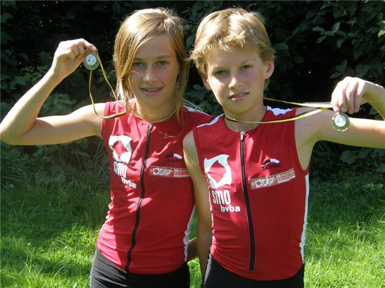

Zaterdag 15 augustus stond in Tongeren de traditionele Powerkid-wedstrijd op het programma in Sportpark De Motten. 2 Jeugdatleten van het SMO-Team zakten af naar deze organisatie van de
Zuid Limburgse Triatlonclub.
Bob Savat ging van start bij de -12 jarigen voor 500m lopen - 6 km fietsen en 500m lopen. Hij legde beslag op een knappe
derde plaats (alhoewel die nummers 1 en 2 niet het volledige fietstraject hadden afgelegd).
Emma startte voor 900m lopen - 12 km fietsen en 900m lopen en kon de
overwinning meenemen naar het Meetjesland, ze haalde het met meer dan één minuut voorsprong op de nummer 2. Proficiat aan onze Ironkids!